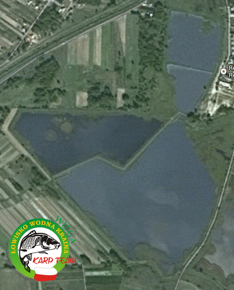

Dla miłośników wędkarstwa stworzyliśmy szereg łowisk obfitujące w różnorodne gatunki ryb.
Cały nasz obiekt to powierzchni 150 h, z czego większość to jeziora, stawy, lasy, położone w malowniczej, turystycznej miejscowości podwarszawskiej Wildze.
Przez ponad 25 lat w chronionych stawach, bez żadnej ingerencji ze strony człowieka wytworzyły się populacje dużych osobników. Dominują karpie o wielkości od 5kg do 25 kg, amury od 8kg do 20 kg i szczupaki od 5 kg do 20 kg.
Gatunki ryb występujące w naszych stawach
- karpie
- amury
- karasie
- szczupaki
- okonie
- liny
- sandacze
- tołpygi
- płocie
Zapraszamy głównie wędkarzy, miłośników ciszy, obcowania z przyrodą i wędkarstwa sportowego, dla których zasada to „Złów i Wypuść” – znajdziecie u nas dużą rybę i wymarzony odpoczynek. Kierujemy się zasadą bezwzględnego zakazu zabijania i zabierania ryb.
Łowiska są czynne od świtu do zmierzchu. Głębokość łowiska od 1,5 metra do 3 metrów.
Zapraszamy również do organizacji zawodów i mistrzostw wędkarskich na terenie naszego łowiska.
Okolica
Z dala od wielkich miast, w malowniczej dolinie Wisły, pośród lasów, wrzosowisk i sadów rozciąga się jedyna w tym regionie, turystyczna gmina Wilga należąca do powiatu Garwolińskiego, położona w odległości około 50 km od Warszawy.
Gmina Wilga - rzadko zaludniona (5200 osób mieszka na 119 km2), obdarzona wspaniałym klimatem i mało dotąd zmienionym przez człowieka krajobrazem, jest wymarzonym miejscem wypoczynku. Sosnowe lasy na wydmach wytwarzają korzystne dla zdrowia olejki eteryczne. Ciągnące się wzdłuż Wisły pasmo urodzajnych gleb madowych sprzyja rozwojowi ogrodnictwa oraz sadownictwa. Znajdujące się na terenie Gminy Osiedle Wypoczynkowe w kulminacyjnych miesiącach letnich, zamieszkałe jest przez właścicieli 5 tysięcy prywatnych działek rekreacyjnych.
Co daje nam w sezonie nawet do 25 tysięcy turystów.
Gmina Wilga ma też zaszczyt posiadać na swoim terenie w Rudzie Talubskiej Wypoczynkowy Ośrodek Prezydencki.
Wilga jest gniazdem rodu Wilckich, a lokowana jako miasto była przed rokiem 1554. Najważniejszym zabytkiem gminy jest kościół Księży Marianów w Mariańskim Porzeczu - Goźlinie, o unikalnej konstrukcji zrębowej naśladującej formy architektury murowanej. W trzynawowym wnętrzu można zobaczyć późnobarokową, iluzjonistyczną polichromię z drugiej połowy XVIII wieku.
W okolicach Wilgi nie brak pomnikowych drzew. Najpiękniejsze okazy to dąb im. gen. Józefa Dwernickiego w leśniczówce Cyganówka oraz dwa dęby szypułkowe na cmentarzu w Wildze.
Wydmy w okolicach Mariańskiego Porzecza porasta dwuigłowa sosna Banksa wywodząca się z Ameryki Północnej.
W Wildze i jej okolicach odnajdziemy wiele miejsc pamięci narodowej. Dla upamiętnienia zaciętych walk, podczas przeprawy wojsk w 1944 roku na przyczółek warecko - magnuszewski, wzniesiono pomnik saperów.
